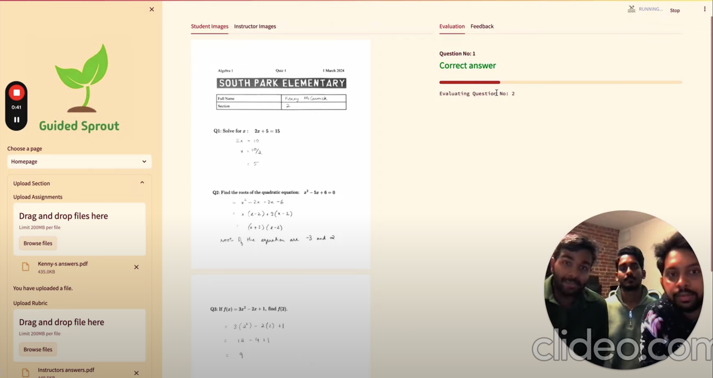
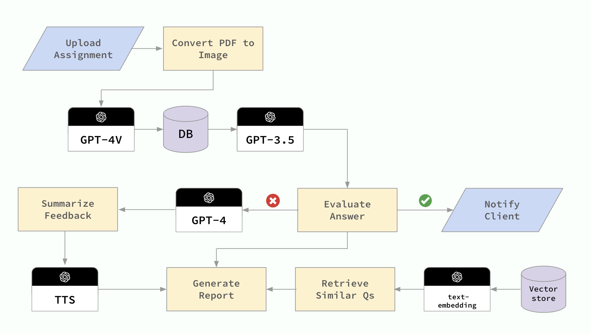
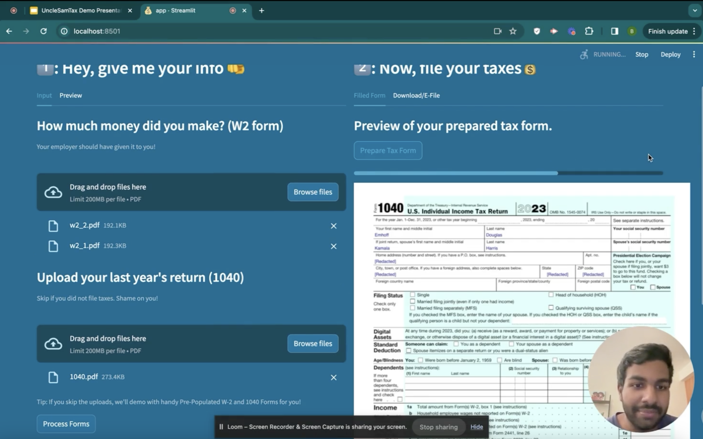
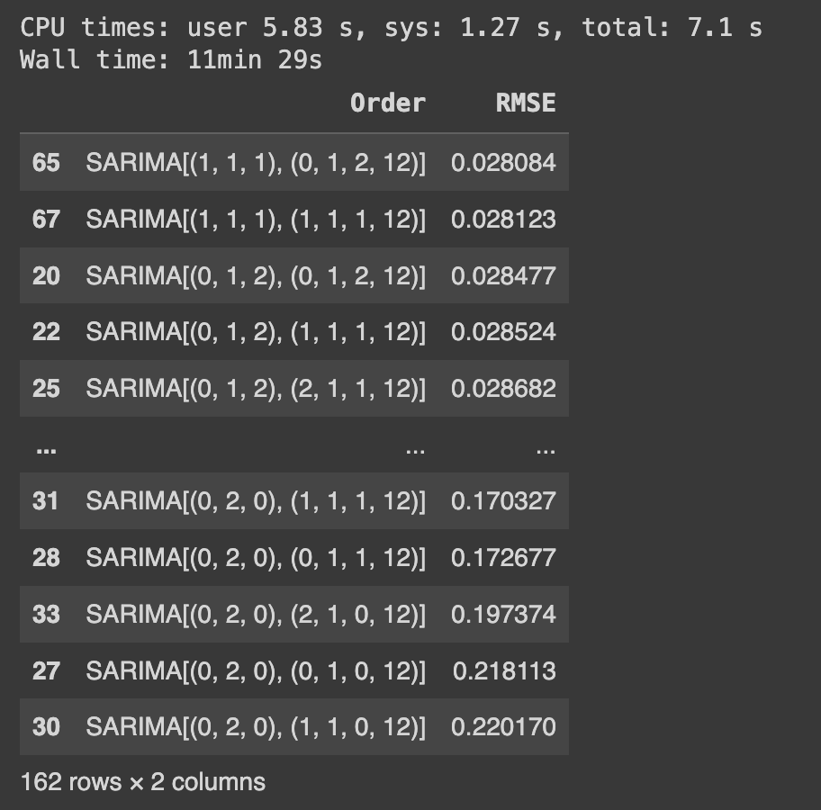

Projects
Le Khan Academie
Le Khan Academie lets you generate on demand Khan Academy style videos for any topic using Gen AI, specifically with a finetuned Mistral 8x7B model.
Le Khan Academie allows users to input queries (e.g., “How does the distributive property work?”). Then Mistral large rewrites this query with more details on what the manim animation should include. This rewritten prompt is then passed into the finetuned Mistral model. Generates a Khan Academy-style video explaining and visualizing the concept with:
- Animation created with finetuned Mixtral 8x7B on Fireworks AI that generates python code using manim animation library.
- Narration by a voice clone of Sal Khan, synchronized with the animation for a brief lecture.
Here is a video demonstration - Link
Guided Sprout

Guided Sprout uses AI to personalize education. Our multimodal platform grades exams, provides tailored student feedback, and recommends targeted resources for improvement.
We use 5 OpenAI models to do so:
- GPT-4V: Transcribes text from paper-based exams.
- GPT-3.5 Turbo: Used as the router model to determine whether an answer is correct. If incorrect, passes the evaluation task to GPT-4.
- GPT-4: Uses Chain of Thought reasoning to give student highly individualized feedback.
- Text-to-speech: Converts summarized feedback to audio.
- Text-embedding-3-small: Embeds math textbook content.
Watch video demonstration here: Link

Uncle Sam Tax

Filing taxes should be simple, especially for the 100M+ Americans who have the simple scenario of just one income source. UncleSamTax solves this by making filing taxes as simple as 1-2-3. How? We ask the user to upload the past year’s forms. We then use GPT-Vision to read the info from the forms and use GPT-4 to calculate values for the next year’s tax return form. And Voila! The user has a filled and prepared tax form that they submit to the government (aka UncleSam). By making doing taxes automated and simple, we are different from other complicated tax products (for every complicated tax scenario) as we are simple taxes for simple scenarios.
Uncle Sam Tax was built using Python, GPT-4, GPT-Vision, Trulens, Portkey, Streamlit etc. Uncle Sam Tax, as a proof of concept, won first place at the GPT hackathon in San Francisco. Our team then decided to go ahead and impelment it for the GPT-4 Powered App Creation Hackathon.
AB Agent
AB Agent automates two parts of the A/B testing workflow using Generative AI:
Design
The design phase of A/B testing is crucial for setting the stage for meaningful insights. AB Agent simplifies this process in three steps:
Understanding User Instructions: Initially, AB Agent takes a user’s natural language instruction to set up an experiment. For example, a user might say, “Design an A/B test to test a UI change where the metric to increase is browsing time. We want the minimum effect to be 10% and we want to be 95% confident in the results.”
Rephrasing Queries: The instruction is then passed through the
mixtral-8x7b-instructmodel, which rephrases the user query into a more statistically oriented format. This step ensures that the setup is aligned with statistical best practices and clarifies the experiment’s objectives.Function Calling for Experiment Design: Subsequently, the refined query is passed to
firefunction-v1. This component ideally calls a sample size calculator among other tools to determine the necessary sample size and other critical details for designing the A/B test effectively.
Inference
The inference phase is where the results of the A/B test are interpreted to make informed decisions:
Interpreting Results: For interpreting the outcomes of an A/B test, AB Agent employs a function-calling model that uses a t-test calculator and other functions. This approach facilitates a robust analysis of the results.
Making Decisions: Based on this analysis, AB Agent makes a go/no-go decision on whether to implement feature B. This decision-making process is backed by statistical evidence, ensuring that changes are made with confidence in their impact.
Built using Python, React, Fireworks etc. AB Agent was a finalist project at the OSS Functional Calling Hackathon.
JoboComplete

Manually inputting the same information like name, email, LinkedIn URL etc. over and over again for each application is a dreadful experience. JoboComplete, a Chrome extension, that automates input filling using LlamaIndex’s RAG capabilities, which has information about your resume.
Built using Javascript, Python, FastAPI, LlamaIndex etc. JoboComplete won Honorable Mention at the LlamaIndex RAG hackathon!
Ask Priya

Ask Priya is an LLM RAG chatbot that answers questions about US immigration using Google’s chat bison model that is fed both the user question and retrieved immigration documents from a vector store. The vector store is built using Llama-index and the documents are scraped webpages from the USCIS website.
Ask Priya performs way better than Ask Emma, the existing solution used by USCIS. Ask Priya also won first place in the Truera Gen AI hackathon.
Built using Python, Llama-index, VertexAI, OpenAI, Trulens, Streamlit etc.
Gemini Hire

Gemini Hire makes applying to jobs way easier using Gen AI. It parses your resume more effectively than Workday using Google’s gemini vision pro into a json file. That json file, along with a user pasted job description, is then fed into 3 sub applications - a cover letter generator, interview questions generator and a skills gap analysis generator. These sub applications are mainly driven by Gemini Pro’s text model. Evaluation is done using Trulens and OpenAI’s API. GeminiHire won second place at the Gemini AI Hackathon!
Built using Python, Gemini Vision Pro, OpenAI, Trulens, HuggingFace, Gradio etc.
SarimaCV

SarimaCV is a python package that does cross validation for SARIMA models in a distributed manner. In my time series class, I was frustrated with having to do cross validation iteratively one condition at a time. So I quickly hacked together a package that does this in a distributed manner.
Data Science New Tab Chrome Application

New Tab application for Chrome with quick access to University of San Francisco pages like MyUSF, calendar, one card etc. Additionally keep up with recent papers and blogs in AI and latest events in San Francisco (updated daily). Also has a to-do list.
Built using Python, React, Firebase, TailwindCSS, Chrome storage API etc.